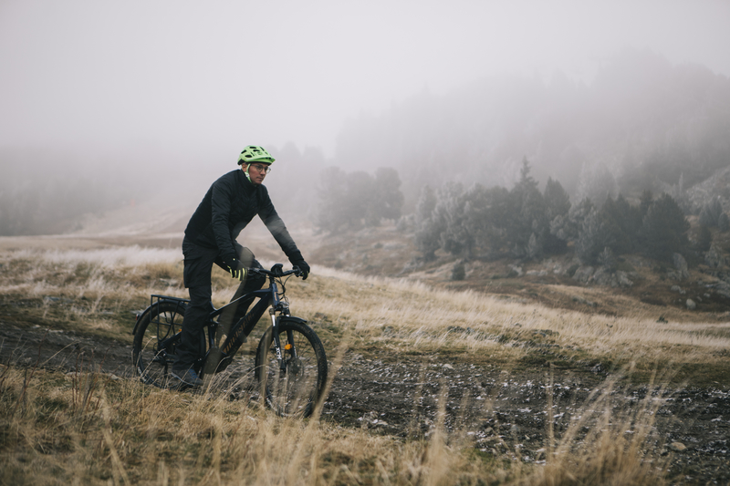
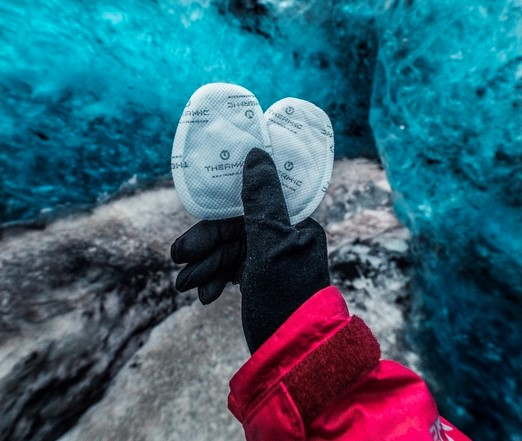
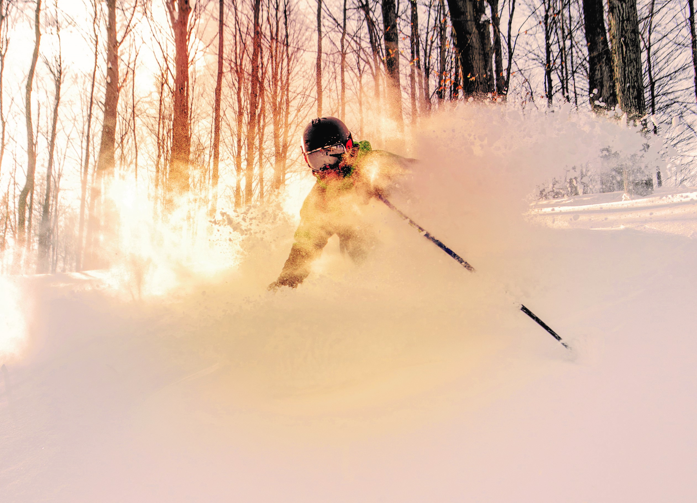

-
Jak wygodniej jeździć na rowerze?
Rower uznawany jest za jeden z najbardziej zdrowych środków transportu. Sportowcy trenujący kolarstwo spędzają na rowerze nawet kilkanaście godzin tygodniowo. Wiele osób po prostu dojeżdża rowerem do pracy, do sklepu, by zrobić zakupy. W mieście rower jest także najszybszym i często najlepszym środkiem transportu. Niezależnie od tego gdzie i w jaki sposób jeździsz bardzo ważne jest to, aby jazda na rowerze była bezpieczna dla Twoich stawów i mięśni niezależnie od pokonywanego kilometrażu.
Komfortowo.eu
Dbaj z nami o swój komfort przez cały rok! Niezależnie od tego, jaką aktywność preferujesz możesz robić to znacznie wygodniej! Narciarstwo alpejskie, ski touring, biegi narciarskie, jazda na rowerze, bieganie, jazda konna, gra w tenisa, wspinaczka górska czy spacery. Każda forma aktywności zasługuje na to, aby wykonywać ją bardziej komfortowo. Większa wydajność podczas uprawiania sportu przekłada się przecież na lepsze osiągi, dzięki czemu ułatwia także rozwój.

-
Jak dobrać odpowiedni rower dla siebie?
Jeśli jesteś na kupnie nowego roweru warto udać się do sklepu, w którym profesjonalni sprzedawcy doradzą jak dobrać typ roweru oraz rozmiar ramy. Istotne jest zwrócenie uwagi na wzrost, masę ciała, teren, po którym zamierzasz głównie jeździć, a także fakt czy jesteś amatorem czy też planujesz starty w zawodach kolarskich.
W Krakowie możesz dobrać odpowiedni rower w sklepie Windsport przy ul. Zakopiańskiej 56A.
-
Bikefitting – regulacja roweru do potrzeb Twojego ciała
Bike fitting to bardziej szczegółowy proces regulacji poszczególnych komponentów roweru: wysokości siodełka, kierownicy czy ustawienia bloków. Najpierw dokonywany jest dokładny pomiar wymiarów roweru (Twojego własnego lub proponowanego w procesie zakupowym). Następnie specjalista od bikefittingu wyznacza na Twoim ciele punkty, które umożliwiają wyznaczenie długości nóg, ramion czy wysokości tułowia. Wysoko wyspecjalizowany system bikefittingu z pomiarem laserowym dostępny jest w Krakowie w sklepie rowerowym Windsport.
Kolejnym etapem jest dokonanie zmian w ustawieniu roweru, które są automatycznie proponowane przez system komputerowy, np. zmiana ustawienia siodła. Badana osoba wsiada na rower i pedałuje na trenażerze. W tym czasie specjalista obserwuje sylwetkę osoby badanej i jeśli to konieczne, dokonuje dodatkowych zmian.
Warto podkreślić, że w procesie bikefittingu brane są pod uwagę ewentualne wady postawy ciała, przykurcze mięśniowe lub stany po kontuzjach. Dzięki temu nawet osoba z pewnymi ograniczeniami ruchowymi może w pełni cieszyć się jazdą na rowerze.
-
Bikefitting a wyniki sportowe
Bikefitting przekłada się na bardziej stabilną pozycją na rowerze. Dobrze dopasowany rower i umiejętnie dobrana pozycja ciała na rowerze podwyższają ekonomię ruchu, pozytywnie wpływając na wyniki sportowe. Jest to szczególnie ważna informacja dla kolarzy regularnie startujących w zawodach.
-

-
Wkładki do butów rowerowych
Wkładki rowerowe stabilizują stopę w bucie, zapobiegając przesuwaniu się jej do przodu. Wkładki do butów rowerowych podpierają łuk podłużny stopy, co sprawia, że podczas pedałowania energia przekazywana jest bezpośrednio na napęd roweru (z pominięciem wypłaszczenia się stopy). Ma to szczególne znaczenie dla osób trenujących kolarstwo, którym zależy na poprawianiu wyników sportowych.
Dzięki wkładkom jazda na rowerze jest bardziej komfortowa – stopy mniej się męczą, niwelujemy ryzyko urazów paznokci i pieczenia podeszw pod przodostopiami.
Wkładki rowerowe mogą być profilowane fabrycznie lub też formowane indywidualnie na stopie klienta. Wkładki termoformowalne zapewniają najwyższy stopień komfortu i dopasowania. Wkładki SIDAS można wykonać w jednym z wyspecjalizowanych punktów SIDAS. Osoba wykonująca takie wkładki jest gruntowanie przeszkolona w zakresie anatomii i biomechaniki stopy podczas jazdy na rowerze.
-
Najczęstsze kontuzje związane z jazdą na rowerze
Nie odpowiednio wyregulowany rower może prowadzić do nieprawidłowego ustawienia określonych części ciała, co grozi zwiększonym ryzykiem odniesienia kontuzji. Do najczęstszych przeciążeń układu ruchu należą:
- Bóle odcinka szyjnego kręgosłupa – gdy głowa jest zbyt mocno wysunięta do przodu lub zadarta do góry
- Bóle odcinka lędźwiowego kręgosłupa – gdy sylwetka jest zbyt mocno pochylona, a przykurcze mięśni kulszowo-goleniowych lub mięśni przykręgosłupowych ograniczają dostępny zakres ruchomości miednicy względem tułowia,
- Bóle kolan – mogą być związane z nadmiernym przesunięciem kolan do środka ramy lub zbyt dużym ugięciem kolana w trakcie jazdy,
- Ból z boku biodra i uda – najczęściej ból wynika z przeciążenia i nadmiernego napięcia pasma biodrowo-piszczelowego, które często ulega podrażnieniu przy złym ustawieniu miednicy na siodle i nierównomiernym obciążeniu guzów kulszowych (gdy siedzimy bardziej na jednym z pośladków),
- Mrowienie palców u rąk – może być to związane z nieprawidłowym ustawieniem odcinka szyjnego kręgosłupa u osób z chorobą zwyrodnieniową lub też uciskiem nerwu w okolicy nadgarstka opierającego się o kierownicę,
- Mrowienie palców u rąk – może być to związane z nieprawidłowym ustawieniem odcinka szyjnego kręgosłupa u osób z chorobą zwyrodnieniową lub też uciskiem nerwu w okolicy nadgarstka opierającego się o kierownicę,
- Ból stóp i cierpnięcie palców u stóp – brak odpowiedniej stabilizacji stopy w bucie może powodować konflikt palców z butem lub też przeciążenia struktur stabilizujących staw skokowy.
-
Jak mniej marznąć, gdy jest zimno?
Problem marznących stóp i dłoni może skutecznie zepsuć humor podczas aktywności na świeżym powietrzu. Niskie temperatury powietrza oraz wiatr przyczyniają się do wychłodzenia organizmu, co zwiększa ryzyko przeziębienia. Jeśli po prostu lubisz uczucie ciepła, a nienawidzisz zimna, pokochasz produkty grzewcze SIDAS dedykowane różnym okolicom ciała.
-
Problem zimnych stóp
Zimne stopy zwłaszcza podczas mrozu to bardzo nieprzyjemne uczucie. Palce zaczynają drętwieć i coraz mniej jesteśmy w stanie kontrolować położenie stopy względem podłoża. Obniżenie temperatury stóp powoduje skurcz naczyń krwionośnych i obniżenie skórnego przepływu krwi, dzięki czemu skóra staje się naturalnym izolatorem. Skutkiem długotrwałego ograniczenia przepływu krwi na obwodzie jest niedokrwienie tkanek. Temperatura palców także spada, co zwiększa ryzyko powstawania odmrożeń podczas długich wędrówek górskich. Jak można zapobiec problemom zmarzniętych stóp?
-
Grzane skarpety
Podgrzewane skarpety SIDAS posiadają płaski element grzewczy, który równomiernie rozprowadza iepło w obrębie stóp. Grzałka została zaprojektowana tak, aby nie przeszkadzała podczas chodzenia. Skarpety wykonane są ze specjalistycznych materiałów o właściwościach termoizolujących, dzięki czemu wygenerowane ciepło jest dłużej utrzymywane przy stopach.
-
Grzane wkładki
Podgrzewane wkładki SIDAS mogą być profilowane fabrycznie lub też formowane indywidualnie na stopie pacjenta. W obu rodzajach wkładek można zaimplementować element grzewczy, który będzie generował ciepło od spodniej strony stopy. Podgrzewane wkładki wspomagają utrzymanie komfortu cieplnego oraz odpowiednio stabilizują stopę w bucie, zapobiegając urazom skóry.
-

-
Problem zmarzniętych dłoni
Problem zmarzniętych dłoni dotyczy aktywności, w których nie możemy schować rąk do kieszeni, a musimy wspomagać ramionami równowagę ciała czy też trzymać kijki narciarskie / kijki do Nordic Walking. Dłonie są najbardziej narażone na zimno zwłaszcza w warunkach wysokogórskich, kiedy wiatr przyspiesza oddawanie ciepła z rąk do otoczenia drogą konwekcji. Odmrożenia palców u rąk są pogłębiane przez niedotlenienie tkanek wskutek zwężenia naczyń krwionośnych podczas przebywania w na dużych wysokościach. Wraz z obniżeniem się temperatury rąk przestajemy odczuwać dotyk, a zaczynamy czuć ból. Coraz trudniej jest operować kijkiem narciarskim – nie jesteśmy pewni aktualnej siły chwytu. Z pewnością wpływa to negatywnie na poziom bezpieczeństwa w górach – dużo prościej można stracić równowagę i upaść.
-
Grzane rękawice
Podgrzewane rękawice SIDAS generują przyjemne ciepło, rozprowadzając je dookoła palców rąk i wokół dłoni. Zapobiega to gwałtownemu skurczowi naczyń krwionośnych, a czucie dłoni zostaje zachowane. Dodatkowo rękawice posiadają membranę chroniącą przed wiatrem oraz przemoczeniem. Możesz bez obaw bawić się na świeżym powietrzu nawet podczas siarczystych mrozów.
-
Ochrona przed wychłodzeniem organizmu
Pamiętajmy o tym, że długie przebywanie w niskich temperaturach otoczenia może doprowadzić do obniżenia się centralnej temperatury ciała. Aby dłużej utrzymać stan komfortu cieplnego warto zaopatrzyć się w ogrzewane kamizelki z wbudowanymi elementami generującymi dodatkowe ciepło.

-
Grzane kamizelki
Podgrzewane kamizelki i kurtki SIDAS posiadają wbudowane elementy grzewcze na plecach, klatce piersiowej i brzuchu. Ciepło dostarczane jest przez kilka godzin. Ładowanie odbywa się za pomocą kabla USB. Intensywność grzania można wygodnie regulować poprzez aplikację zainstalowaną na smartfonie.
-
Szybkie rozwiązania dostarczające ciepło
Jeśli wybierasz się na dłuższą wycieczkę w miesiącach jesienno-zimowych i szukasz doraźnego rozwiązania dla zimnych stóp lub dłoni, wypróbuj ogrzewacze jednorazowe SIDAS.
-
Ogrzewacze jednorazowe SIDAS
Ogrzewacze jednorazowe po ich rozpakowaniu zaczynają generować ciepło. Ogrzewacze możesz umieścić na grzbiecie stopy lub też w kieszeniach kurtki. Jest to szybkie i praktyczne rozwiązanie pozwalające zachować komfort cieplny podczas aktywności na świeżym powietrzu.
-
Jak wygodniej jeździć na nartach?
Dobrze dobrane buty narciarskie oraz umiejętne korzystanie z dedykowanych akcesoriów determinuje to, czy dzień spędzony na stoku będzie się kojarzył z przyjemnością czy też raczej z katorgą. Większość nowych miłośników narciarstwa przeżyło w swoim życiu choć jeden dzień na stoku, podczas którego zamiast cieszyć się aktywnością odliczało godziny do końca dnia czy też liczbę zjazdów w karnecie. Co można zrobić, aby wygodniej jeździć na nartach? Poniżej spisaliśmy najczęstsze problemy oraz propozycję ich rozwiązań.
-

-
Ucisk stopy przez but narciarski
Każdy z nas posiada stopy o nieco odmiennej budowie. Wiele osób zmaga się z problemem płaskostopia czy też koślawości stóp. Istotnie zwiększa to ryzyko nierównomiernego docisku skorupy buta do stopy. Buty narciarskie sprzedawane z półki są wykonywane pod uśredniony model zdrowej stopy. W związku z tym bardzo często dochodzi do powstawania miejscowo zwiększonego ucisku, otarć i bólu utrudniającego jazdę na nartach.

-
Wkładki profilowane
Wkładki podpierające łuk podłużny zapobiegają drobnym przesunięciom stopy wewnątrz buta, ograniczając urazy powstałe wskutek tarcia. W przypadku koślawości pięt wkładki korygują pochylanie pięt do środka, dzięki czemu niwelujemy ucisk skorupy buta o kostkę przyśrodkową lub inne kości stopy.
-
Bootfitting
Gdy stopa posiada haluksy (paluchy koślawe) lub inne wystające kostki w obrębie stopy, konieczne może się okazać miejscowe odbarczenie skorupy buta. Zabieg taki wykonywany jest przez profesjonalnego bootfittera. Bootfitting obejmuje także inne strategie w zakresie modyfikacji skorupy oraz buta wewnętrznego, których celem jest jak najlepsze dopasowanie buta do kształtu stopy.
-
Cierpnięcie stóp podczas jazdy na nartach
Jeśli podczas jazdy marzysz tylko o tym, aby na chwilę zatrzymać się i rozpiąć klamry buta, może świadczyć to o zbyt wąskim bucie narciarskim w stosunku do objętości stopy. Objawami złego dopasowania jest cierpnięcie stóp z możliwym drętwieniem lub mrowieniem palców. Przyczyną jest ograniczenie dopływu krwi do stóp i/lub ucisk nerwu przez zbyt ciasną skorupę buta.
-
Bootfitting
Dzięki bootfittingowi można poszerzyć buty w obrębie przodostopia – nawet gdy posiadasz bardzo szeroką stopę o wysokim podbiciu. Zwiększenie przestrzeni dla stopy zapewnia komfort i zapobiega bolesnemu uwięźnięciu stopy.
-
Zawijanie się skarpet, wżynanie się szwów w skórę
Jeśli czujesz, że coś miękkiego podrażnia skórę stopy, może to świadczyć o doborze nieodpowiednich skarpet. Wżynanie się szwów lub wąskich ściągaczy w skórę jest nieprzyjemne i po kilku godzinach może uniemożliwić jazdę. Musisz wtedy zdjąć buty i poprawić ułożenie skarpety.
-
Skarpetki dopasowane do potrzeb Twoich stóp i objętości goleni
Skarpety bezszwowe z odpowiednio dobranym stopniem kompresji zapewniają komfort skórze stóp. Specjalnie opracowana kompozycja materiałów pozwala skórze oddychać i jednocześnie ogranicza utratę ciepła ze stóp. Skarpety sportowe o wysokim stopniu kompresji wspierają świadomość ruchu, co przyczynia się do krótszego czasu reakcji i pozytywnego wpływu na technikę jazdy.
-
Żelowe ochraniacze
Jeśli po kilku godzinach jazdy czujesz bolesny ucisk w przedniej części goleni, może to świadczyć o nadwrażliwości kości piszczelowej na bodźce mechaniczne. Rozwiązaniem problemu jest zastosowanie specjalnie zaprojektowanego żelowego ochraniacza. Element ten umieszczany jest w bolesnej okolicy z przodu goleni. Anatomiczny kształt nakładki ułatwia jej dopasowanie do nogi.

-
Zimne stopy
Osoby z zaburzeniami krążenia dotyczącymi dystalnych części ciała często cierpią na tzw. „zimne stopy”. Wraz z kolejną godziną spędzoną w ujemnych temperaturach otoczenia stopy zaczynają marznąć i drętwieć. W dalszej kolejności pojawia się ból palców stóp. Dyskomfort związany z uczuciem zimnych stóp może się także pojawić u całkiem zdrowych osób, które nie są zaaklimatyzowane do niskich temperatur.
-
Podgrzewane wkładki i skarpety
Problem zimnych stóp rozwiązują produkty z wbudowanymi systemami grzewczymi. Sidas posiada w swojej ofercie podgrzewane wkładki oraz podgrzewane skarpety, które generują dodatkowe źródło ciepła i zapobiegają marznięciu stóp.
-
Mokre buty po dniu spędzonych na stoku
Nie ma nic gorszego nic wkładanie nóg do wilgotnych butów wewnętrznych. Wilgoć nie tylko sprzyja wychłodzeniu stóp i przeziębieniu, ale także bywa źródłem nieprzyjemnych zapachów.
-
Suszarki do butów
Po powrocie ze stoku włóż do butów wewnętrznych specjalnie suszarki, które w bezpieczny sposób osuszą wilgotny materiał. Wybrane modele suszarek posiadają także opcję naświetlania UV, co zapobiega namnażaniu się bakterii i powstawaniu nieprzyjemnych zapachów. Przed rozpoczęciem suszenia warto z butów wewnętrznych wyjąć wkładki i obłożyć jej papierowym ręcznikiem. Należy unikać kładzenia wkładek na grzejnikach i w pobliżu źródeł ciepła powyżej 60 stopni Celsjusza, ponieważ mogłoby to doprowadzić do odkształcenia się materiału wkładek.